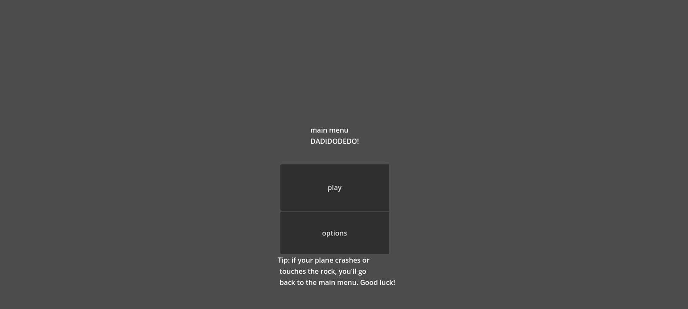
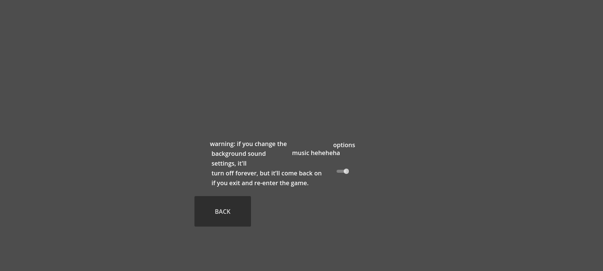
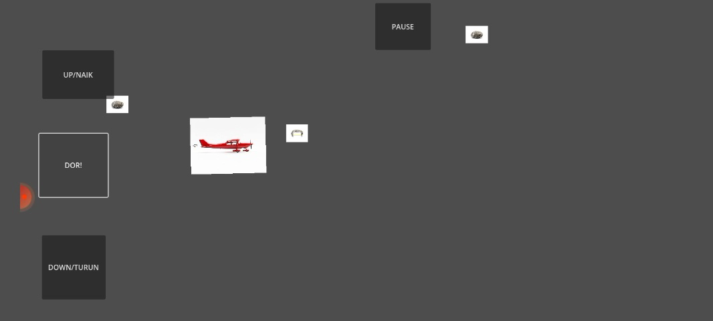

Dadidodedo adalah game indie buatan developer ArgusCalonDev. game ini bertema classic shooter, namun dengan fitur dan grafik yang unik. karena game ini memiliki grafik yang tidak classic, lalu memiliki pengaturan yang unik, "kalau kamu mematikan musik di game, maka musiknya akan selamanya mati dan akan hidup kembali kalau kamu restart game nya".
  sekarang dadidodedo telah mencapai versi stable! berikut penjelasannya: dadidodedo setelah sekian lama update,akhirnya mencapai versi stable dengan banyak perubahan. salah duanya adalah penambahan mini games dan penambahan fitur kerusakan pesawat yang bisa diperbaiki di main menu. APAKAH DADIDODEDO SUDAH SEMPURNA? belum. dadidodedo belum sempurna. hal ini dikarenakan isi game masih sedikit,mini game hanya 2 dan isi shop hanya ada 2. namun,versi ini menjadi versi stable karena gameplay sudah mempunya mekanik mekanik yang diperlukan. jadi versi stable bukan berarti dadidodedo sudah sempurna,justru dalam versi ini feedback kalian masih sangat dibutuhkan. jadi tunggu apa lagi? INSTALL DADIDODEDO SEKARANG (Atau nanti juga boleh) DI ITCH.IO: